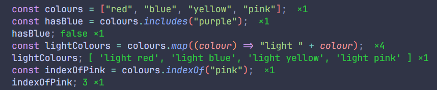

Day 1 - 23 September, 2025
Today's Progress:
Tested myself on some basic JS exercises as a start to this new challenge. These were planned practice
exercises from a course I'm working through.
I found that a variable set to null has
an object type. Due to this historical mistake in the language's design, it's not reliable to check for
null by using typeof. A better way to check if a variable is
null is to use a strict equality comparison.
Day 2 - 24 September, 2025
Today's Progress:
Spent an hour or so working through exercises with different loops and logical operators.
Day 3 - 25 September, 2025
Today's Progress:
Went back to a previous tutorial about using the debugger in VS Code - I couldn't get this working before, but I've learnt how to do this now so I can play some more with this tool!
Day 4 - 26 September, 2025
Today's Progress:
Worked through a few exercises today, focusing on converting regular JavaScript functions into arrow functions.
Day 5 - 27 September, 2025
Today's Progress:
Worked through some exercises on array methods, and completed the bonus challenge using methods that I've struggled using in the past!
Thoughts:
Today I've seen the benefit of the practice exercises, I didn't have to look up the method usage, and even though I feel I don't understand arrow functions or map, I managed to write both from my brain and prepend light to each array item!
Day 6 - 28 September, 2025
Today's Progress:
I worked on some object methods exercises which were new to me: Object.keys(), Object.values(), objectName.hasOwnProperty("price") for checking if a key exists, and Object.fromEntries(array) which creates an object from an array of key, value pairs.